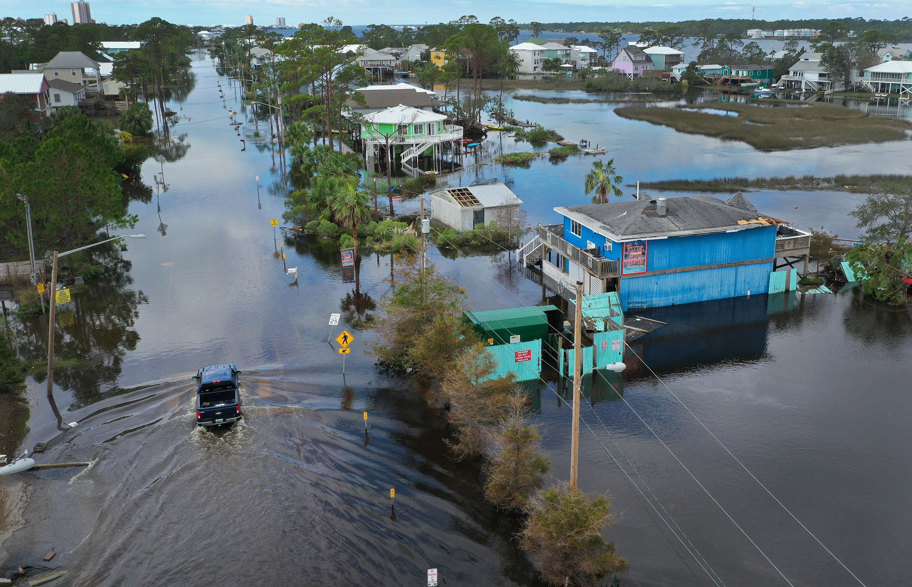

Islands in Danger
Rising sea levels are threatening islands across the world. As glaciers melt and oceans warm, sea levels continue to rise, increasing the risk of flooding, coastal erosion and damage to homes and ecosystems.
Many low-lying islands could become uninhabitable in the future. Communities are already adapting by building sea walls, restoring coastal habitats and reducing greenhouse gas emissions.
Flooding

Higher sea levels make flooding more frequent and more severe. Coastal communities experience stronger storm surges, damaged homes, flooded roads and contaminated drinking water.
Coastal Erosion

Rising seas and stronger waves gradually wear away beaches and coastlines. This process known as coastal erosion which destroys habitats, threatens buildings and reduces the amount of land available for communities.